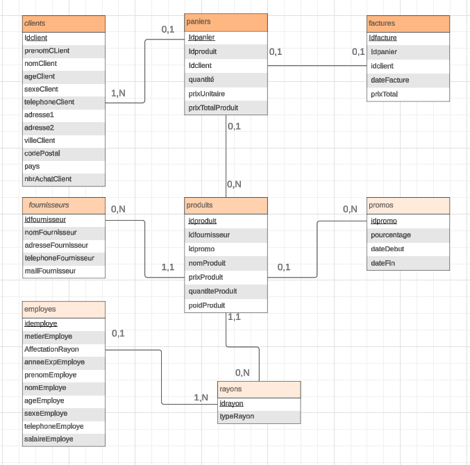
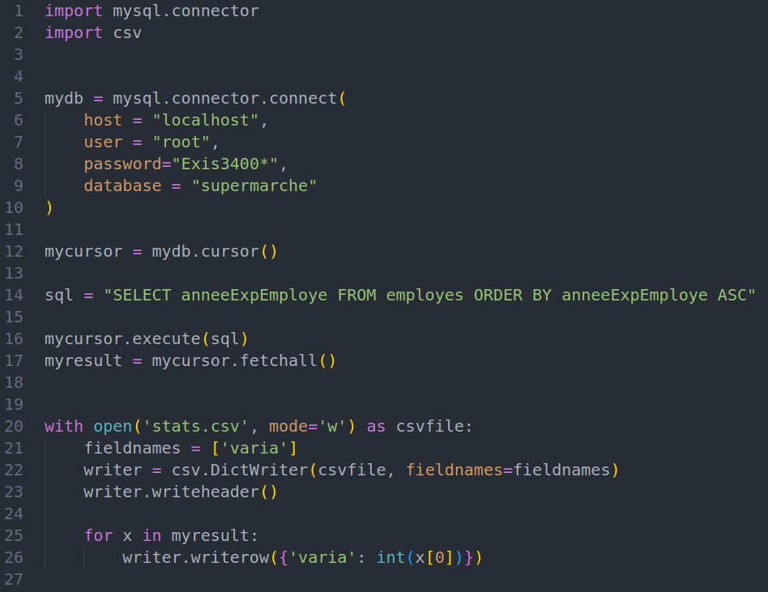

Gérer des données de l’information
La gestion des données de l'information est un domaine crucial dans de nombreux domaines. Elle implique la collecte, la sécurisation, le stockage, l'analyse et l'utilisation des données pour prendre des décisions éclairées et optimiser les opérations. Maîtriser cette compétence et l’exploiter est primordial dans notre société actuelle où l’information est la clé pour comprendre au mieux les dynamiques du marché, anticiper les tendances, et innover.
Durant le cursus de première année de BUT INFO, j’ai pu apprendre et approfondir mes connaissances sur la gestion de l’information dans une base de données en maîtrisant la manière de structurer un modèle relationnel de celle-ci, en passant par le MEA, le MLD et le MCD. Sans oublier les méthodes de normalisation des bases de données, qui optimisent leur taille et en simplifient la compréhension.
Pour exploiter une base de données, j’ai appris à maîtriser plusieurs outils tels que le langage SQL, qui permet de créer des requêtes dans un système de gestion de base de données (SGBD) afin de manipuler la base de données. J’ai également utilisé le logiciel MySQL Workbench, qui propose plusieurs outils efficaces pour la création d’une base de données, comme une interface graphique pour créer les tables, un outil de conception de modèle relationnel et le forward engineering, qui, une fois réunis, créent une base de données sur un serveur sans avoir à utiliser SQL. Ces connaissances m’ont permis de réaliser pour un club de voile une base de données administrative, ce qui m’a beaucoup appris.

Python et R sont deux langages de programmation qui facilitent la manipulation de données. R est spécialisé dans les calculs et les représentations mathématiques, tandis que Python est plus varié et possède des milliers de bibliothèques pour des domaines spécifiques, dont la manipulation et la représentation des données.
Ces connaissances et la maîtrise de la théorie des bases de données et des outils, m’ont été précieusement utiles lors de la réalisation de la SAE associée. Concevoir une base de données pour un supermarché à partir d’un cahier des charges client fut plutôt aisé grâce au MEA et au modèle relationnel créé sur MySQL Workbench, ainsi qu’au forward engineering qui exporte la base de données vers le serveur phpMyAdmin. Là, j’ai créé et configuré des procédures stockées et des déclencheurs afin que la base de données soit autonome.
Ainsi, pour l’extraction des données, Python est très utile, notamment avec les bibliothèques mysql.connector et csv. Avec Python, il est possible de sécuriser les données contre les injections SQL, qui sont des attaques très nocives pour la sécurité des informations sensibles. Grâce à la requête de notre choix, nous pouvons stocker les données dans un fichier CSV qui sera ensuite analysé par les différents programmes statistiques du langage R.
Le langage R est un langage de programmation libre dédié aux statistiques et à l’analyse de données. Avec la création de différentes fonctions, nous pouvons analyser en profondeur les statistiques importantes d’un supermarché, comme les produits fréquemment achetés selon l'âge du client, ou la tranche d’années d’expérience des employés pour combler le manque d’expérience dans un secteur d’activité du supermarché.
La réalisation de ce projet m'a fait prendre conscience des lacunes que je possédais, comme la réalisation d'un modèle relationnel. J'ai pu en apprendre davantage en me poussant à approfondir mes connaissances en lisant les différentes documentations en libre service.
Cependant, j'ai été très à l'aise avec la création de procédures et de déclencheurs qui ont pour but d'automatiser la base de données.
Si un projet similaire m'était redonné, je m'impliquerais d'abord dans l'élaboration des tables et de leurs attributs pour avoir un maximum de données exploitables et indispensables au bon fonctionnement d'une entreprise ou d'une organisation. Connaître chaque entité et les informations les concernant est la clé d'une base de données complète et exploitable.